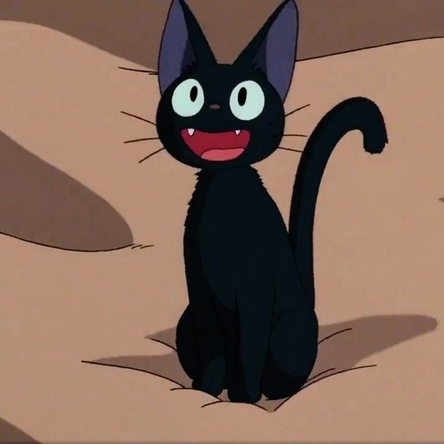
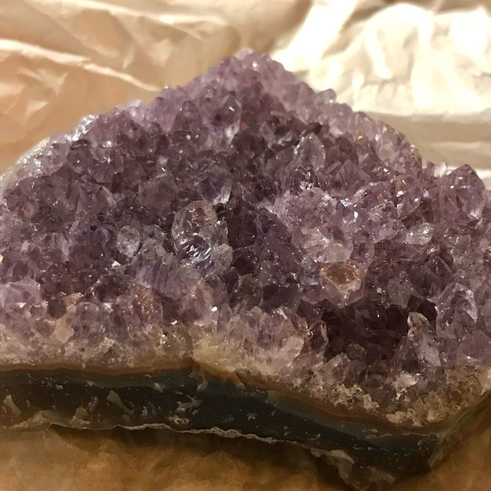

День добрый! Меня зовут Валерия. Учусь на 2 курсе направления ИВТ Самарского университета, а среднее общее образование получила в МБУ"Школа №93" г.о. Тольятти.
За 19 лет моей жизни было много хобби и увлечений, например, такие как: различные виды рукоделия(вязание, валяние, вышивка, лепка, бисероплетение), рисование (преимущественно акрилом и акварельными карандашами), журналистика(фотографировала, писала статьи, сценарии и закадровые тексты, снимала, озвучивала и монтировала сюжеты для школьных выпусков новостей), спорт(бальные танцы и плавание), в определённый период фанатела по аниме. Имею много мыслей и поверхностных знаний(благодаря своим интересам), вследствие чего могу неплохо поддержать диалог.
Некоторые факты:
- Обожаю кофе, готова отдать за него последние деньги, а если и они закончатся, то душу тоже продать можно.
- Читаю не часто, но люблю произведения Набокова.
- Испытываю особую слабость к кошачьим, поэтому две наглые пушистые морды являются частью семьи уже более 10 лет.
- Характер похож на папин, честно сказать, на свою категоричность не жалуюсь.
- Могу сказать пару слов о человеке, взглянув на его натальную карту.
- Очень люблю общаться и могу найти общий язык со многими. Как правило, мои друзья - это очень весёлые и интересные люди.
- Более 2 лет собираю натуральные камни. В коллекции около 25 штук. Мои любимые - аметист, целестин, розовый кварц и тигровый глаз.
Люблю смотреть:
Если выбирать фильм на вечер, то буду искать триллер. Нравится смотреть анимации Хаяо Миядзаки (любимые с детства - "Мой сосед Тоторо" и "Ведьмина служба доставки"), а так же видео про маньяков))) Из запомнившихся сериалов - "Шерлок" и "Хороший доктор".
Люблю слушать:
Считаю себя меломанкой. В плейлисте можно найти рок, поп, kpop, реп, альтернативу и т. д. А дальше в подробности вдаваться не буду))

